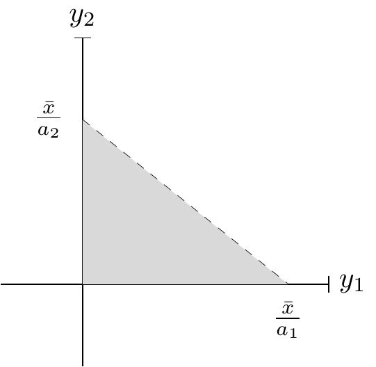
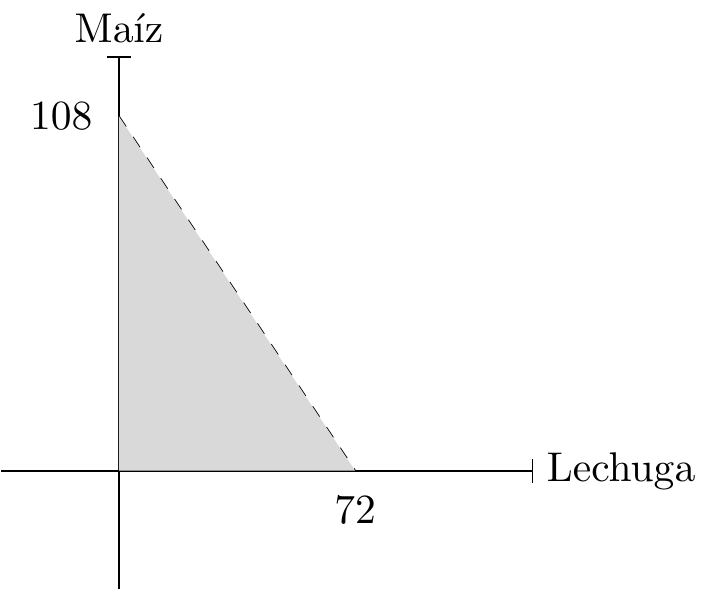

1 Introducción a la economía.
1.1 Definición y clasificación de la economía:
La palabra economía significa literalmente “administración del hogar”, pero su definición es “el estudio del modo en que la sociedad asigna recursos escasos a necesidades múltiples”. Los recursos pueden ser o no escasos, para los que lo son se le llaman recursos económicos, y para los que no recursos libres. Los libres no tienen un valor económico, por lo tanto, tampoco tienen dueños. A ambos bienes las personas les otorgan un valor. En particular, los recursos escasos generan un , por lo que surge un problema para asignar su valor.
{La economía estudia el modo en que la sociedad gestiona sus recursos escasos, es más, el problema fundamental de la economía es la Si no existiera este problema, la ciencia de la economía no existiría. Esta ciencia busca entender el modo en que se interrelacionan las personas a nivel económico, es decir, en el mercado. Para que exista este último termino, tiene que haber compradores y vendedores que realicen transacciones de entre ellos, ya sea de forma física o no.}
Existen dos tipos de niveles de estudio de la economía, la microeconomía que estudia unidades económicas individuales y la macroeconomía que estudia variables económicas agregadas. Un sistema económico es la forma en que se asignan los recursos, existen los centralizados, es decir, los que un solo planificador asigna los recursos, los descentralizados, que la sociedad en general asigna los recursos y los mixtos, que asignan algunos bienes el estado y el otro la sociedad. La econometría es el estudio de estas cuestiones basado en técnicas estadísticas para testear postulados macroeconómicos y microeconómicos.
| Tipo | Clasificación | Definición | Ejemplo |
|---|---|---|---|
| Sistema Económico: | Centralizado | Un solo agente administra todos los bienes. | El gobierno regulariza, produce y administra todos los bienes. |
| Descentralizado | Los bienes son repartidos por la sociedad. Rol ejercido por el mercado. | Varias empresas producen un mismo bien, por lo que la sociedad escoge a quien comprar. | |
| Mixto | Algunos bienes o mercados son centralizados y otros descentralizados. | El petróleo tiene intervenidos los precios y el gobierno tiene el monopolio de distribución. En contraste, el maíz es producido por distintos semilleros. | |
| Niveles de Estudio: | Microeconomía | Estudio de unidades económicas individuales. | La administración de una familia o empresa. |
| Macroeconomía | Estudio de unidades económicas agregadas. | La administración de un país en base a variables como el PIB, la UF, el desempleo, etc. | |
| Económicos | Tienen valor económico y son escasos. | El trigo, Los bienes raíces o el agua. | |
| Libres | No tienen valor económico. | El sol. |
1.2 Los Diez Principios de la economía:
Los diez principios de la economía son afirmaciones que muestran hechos relevantes del análisis económico de acuerdo a . Estos responden a tres preguntas.
- ¿Cómo los individuos toman decisiones? (eficiencia, escasez, costos de oportunidad e incentivos.)
- ¿Cómo interactúan los individuos? (derechos de propiedad, fallas del mercado y externalidades.)
- ¿Cómo funciona la economía en su conjunto? (productividad, inflación y ciclo económico)
En la siguiente tabla se explican estas proposiciones:
| Numero: | Principio: | Explicación: | Ejemplo: |
|---|---|---|---|
| 1 | “Los individuos enfrentan disyuntivas.” | Esto se refiere a escoger una cosa u otra. | Los dos tipos de disyuntivas son: Eficiencia, es decir cómo la sociedad aprovecha al máximo sus recursos. Equidad, cómo la sociedad distribuye equitativamente los recursos. Ambos tipos de disyuntiva son dependientes uno al otro. |
| 2 | “El costo de algo es aquello a lo que se renuncia por obtenerlo.” | Esto se refiere a “el costo oportunidad”, o bien, a lo que se renuncia por obtener otro bien. También se le conoce como precio sombra. | Comprar para el desayuno un plátano renunciando a comer una manzana. |
| 3 | “Pensamiento marginal.” | Solo venderemos algo si la ganancia marginal supera el costo marginal. | El costo de producir manzanas, con todos los gastos que conlleva, es menor al beneficio y, por lo tanto, al ingreso que me proporciona este. |
| 4 | “Los individuos responden a incentivos.” | Cuando hay cambios en los costos, beneficios o se hace propaganda, o publicidad en un producto. | Si el plátano vale más que la naranja, compraré naranja, pero si el plátano hace mejor para la salud, compraré plátano. |
| 5 | “El comercio puede mejorar el bienestar de todos.” | Cuando hay competencia todos ganan, o al menos, no se pierde. Hay más especialización y se intenta abaratar los costos sin perder la especialización. | Chile puede producir autos, pero no será eficiente, porque China lo hace mejor, pero sí puede vender cerezas, ya que Chile es superior a China en ese rubro. |
| 6 | “Normalmente, los mercados son un buen mecanismo de asignación de recursos.” | Primer teorema del bienestar social (PTB): La mano invisible de Adam Smith dice que los mercados se regulan solos y lo hacen bien. Este principio concluye que es el egoísmo individual, con relación a la economía, el que trae mayores beneficios a la sociedad y no la solidaridad de los individuos. | Las personas producirán y comprarán pan según el precio que tengan las panaderías y la calidad que tenga. |
| 7 | “En ocasiones, el gobierno puede mejorar los resultados del mercado.” | Segundo teorema del bienestar social (STB): Por fallas del mercado, externalidades o poder de mercado. | Impuesto a las empresas que contaminan, evitan una externalidad negativa ayudando al común de la gente. |
| 8 | “El nivel de vida de un país depende de su capacidad para producir bienes y servicios.” | Un punto que afecta es el PIB per cápita, lo que produce el país dividido por su población. Y la productividad, que es la cantidad de bienes y servicios producidos por cada unidad de trabajo. | Chile no solo tiene un PIB per cápita mayor que el de sus vecinos de la región, sino que también tiene farmacias, supermercados, etc. |
| 9 | “Los precios suben cuando el Banco Central imprime mucho dinero” | Inflación: o también desvalorización del valor de la moneda por su gran cantidad de circulación. | Al imprimir más billetes hay más dinero circulando, esto hace que se gaste más dinero, pero que al mismo tiempo este dinero tenga menos valor, ya que la cantidad de bienes y servicios en la economía siguen siendo los mismos. |
| 10 | “La sociedad enfrenta una disyuntiva a corto plazo entre inflación y desempleo.” | Curva de Phillips: hay un intercambio de inflación por desempleo. Ciclo económico: Hay una variación de intensidad en la actividad económica, como el empleo y la producción. | La gran depresión (1929). |
1.3 Modelos y supuestos:
El análisis de un modelo económico toma en cuenta supuestos, los modelos económicos analizan:
- Un problema y su información relevante.
- deducciones lógicas con ayuda de las matemáticas.
Y el supuesto de este modelo se centra en:
- cuales son estos.
- ¿son algunos mejores que otros?, ¿son más necesarios?, ¿son suficientes?
A base de estos conceptos se hace un análisis positivo y otro negativo.
Ejemplo
¿Cómo afectará un aumento de la inflación en el mercado de la comida rápida?1
En este caso solo tenemos un supuesto, que es el aumento de la inflación y el problema a resolver es cómo influye esto en este mercado. Dos posibles análisis de respuesta:
Si el causante de la inflación es un aumento del salario mínimo: Los sueldos aumentan y la gente tendrá más dinero para gastar. Por consecuencia, el aumento del gasto de las personas va a generar escasez y esta escasez un aumento de los precios. Esos precios siendo los del mercado de comida rápida también.
Si hay una mayor emisión/impresión de papel moneda (billetes): La gente tiene más acceso a crédito y podrá gastar más dinero, lo que generará escasez y aumento de precios. En particular, también afectando los precios en el mercado de comida rápida.
##Fronteras de posibilidades de producción o FPP:
Hay tres términos que se relacionan cuando hablamos de posibilidades de producción:
Tenemos los los factores productivos, es decir, el uso que se le da a el capital humano, los recursos naturales, el capital físico y las tecnologías para producir el bien.
El conjunto de posibilidades de producción es el grupo que reúne los distintos resultados al decidir fabricar una combinación de bienes con factores productivos variables que sirven como insumo en todos los procesos productivos que se analizan. Así la frontera de posibilidades de producción (FPP) se representa por las combinaciones de producción (en la frontera del conjunto de posibilidades) que puede tener una economía teniendo en cuenta que sus factores productivos se utilizan de forma eficiente (es decir, no se puede producir más con otra asignación de recursos).
Finalmente tenemos el costo de oportunidad que, en simples palabras, es cuanto de un producto (por ejemplo \(y_1\) en la Figure 1.1 ) se pierde al aumentar la producción en una cierta cantidad de otro bien (por ejemplo \(y_2\) en la Figure 1.1).
FPP de forma matemática y gráfica:
Digamos que tenemos un factor o insumo productivo limitado \(\bar x\). Si queremos crear una unidad del bien \(y_1\) se gastarán \(a_1\) unidades del factor, y al fabricar una unidad del bien \(y_2\) se usaran \(a_2\) unidades del factor. Si lo vemos matemáticamente tenemos una suerte de restricción presupuestaria que nos obliga a explicar el uso de recursos \(\bar x\) como una decisión de producción \((y_1,y_2)\):
\[ \bar x=a_1y_1+a_2y_2 \tag{1.1}\] En consecuencia, la máxima cantidad de \(y_n\) para \(n = 1\) ó \(2\), se representa como: \[ \bar x=a_ny_n \Leftrightarrow y_n=\frac{\bar x}{a_n} \]
Entonces gráficamente podemos representar tanto la frontera (con la ecuación Equation 1.1) como la región bajo la misma que representa combinaciones de producción factibles que no maximizan la cantidad producida (ineficientes):
Note que el coeficiente \(a_i\) nos explica los requerimientos de insumo por cantidad producida. De esta forma, podemos interpretar \(a_i\cdot y_i\) como la demanda del insumo dependiente en la cantidad que se quiere producir. Denotemos esa demanda por \(x_i(y_i)=a_i\cdot y_i\). Si no hay otros insumos en el proceso de producción, entonces al invertir \(x_i(y_i)\) obtendremos la función de producción. En el caso anteriormente mencionado, sería \(y_i(x_i)=\frac{x_i}{a_i}\). Con este ejemplo podemos ver que si aumentamos marginalmente la contratación del insumo \(i\), entonces la producción aumentará en un valor de \(\frac{1}{a_i}\). Ese valor, equivalente a la derivada de la función de producción respecto del factor productivo, es lo que se conoce como productividad marginal. En conclusión, el inverso del coeficiente \(a_i\) es la productividad marginal del insumo en el sector \(i\).
Ejemplo
Un granjero tiene \(216\) hectáreas, si planta lechuga podrá producir \(1/3\) toneladas por hectárea. Si cosecho \(34\) toneladas de lechuga, y el resto de las hectáreas las usó para sembrar maíz, sabemos que la producción de maíz es igual a \(57\) toneladas. Grafique la FPP.
Respuesta:
Paso I: Interpretar.
Diremos que \(y_1\) es la cantidad de lechuga e \(y_2\) la cantidad de maíz, ambos se miden en toneladas, el costo de oportunidad para la lechuga en base al maíz estará en función de \(a_1\) y \(a_2\). La escasez estará dada por el factor limitante que es \(\bar h\) y fijo en \(216\) de acuerdo al enunciado.
Si por hectárea se produce \(1/3\) de tonelada de lechuga, entonces \(\frac{1}{a_1}=\frac{1}{3}\). Utilizando la ecuación Equation 1.1 para \(y_1=34\) e \(y_2=57\), es decir asumiendo tecnologías con un solo insumo y lineales, tenemos lo siguiente si reemplazamos la información previa:
\[\bar h=216=\underbrace{3}_{\frac{1}{a_1}=\frac{1}{3}}\cdot \underbrace{34}_{y_1}+a_2\cdot \underbrace{52} _{y_2}.\]
Paso II: Escribir las ecuaciones y resolver.
Entonces, es posible obtener \(a_2\) resolviendo lo anterior:
\[ \bar h=a_1y_1+a_2y_2 \] \[ 216= 3y_1+a_2y_2 \Leftrightarrow 216=3 \cdot 34+57a_2 \] \[ 216-102=34+57a_2 \Leftrightarrow \\frac{114}{57}=a_2 \] \[ a_2=2 \]
En resumen, del enunciado hemos interpretado cuánto vale \(a_1\). Luego, hemos deducido cuánto vale \(a_2\) para poder completar la ecuación de la FPP y así tener la información para graficarla. Así, la ecuación resulta:
\[ \bar h = 3y_1+2y_2 \]
Paso III: Calcular cantidades máximas de cada bien.
\[ 216=3y_1 \Leftrightarrow y_1=72 \]
\[ 216h=2y_2 \Leftrightarrow y_2=108 \]
Paso IV: Hacer el gráfico.

1.4 Especialización y comercio:
Al comparar dos productores puede que cada uno use más unidades de factor productivo para hacer un bien que otro. Entonces definiremos dos conceptos:
Ventaja absoluta: es la habilidad por producir el mismo bien, pero con menos unidades de factor.
Ventaja comparativa: Habilidad de un productor para producir un mismo bien con menos costo de oportunidad.
¿Como se calcula cada uno?
Tenemos dos productores estos son el productor “D” y el productor “E”, también dos bienes que requieren de los mismos factores de producción uno es el bien “b”, que cuesta producirlo \(a_1\) en D y \(a_2\) en E, y el otro es el bien “c”, que cuesta producirlo \(a_3\) en D y \(a_4\) en E. Además el factor productivo limitante los denotaremos como x.
La ecuación para comparar la producción de sus bienes es la siguiente:
\[ \begin{matrix} D: x = a_1 b + a_2 c\\ E: x = a_3 b + a_4 c\\ \end{matrix} \]
Ejercicio resuelto:
En la chocolatería E se hace chocolate dulce “d” y le cuesta producirlo 10 gramos de cacao, pero en la chocolatería B le cuesta producirlo 15 gramos de cacao. Ambos producen también chocolate amargo “a”, a la chocolatería E le cuesta 12 gramos de cacao producirlo, mientras que en la B le cuesta 20 gramos.
Si los dos tienen la misma cantidad de caco “x” ¿Quién tiene la ventaja absoluta en los distintos bienes? Y ¿Quién tiene la ventaja comparativa en estos chocolates?
Respuesta:
Paso I: Escribir la ecuación.
\[ \begin{matrix} E: $x = 10d + 12a$ \\ B: $x = 15d + 20a$\end{matrix} \]
Paso II: Calcular la ventaja absoluta.
Para esto, solo tenemos que comparar los coeficientes de cada bien con el de la otra chocolatería, el de menos coeficiente, es el que tiene mayor ventaja absoluta:
\[ \begin{matrix} \text{d: $E = 10$, $B = 15$} \\ \text{E tiene la ventaja absoluta.}\\ \text{a: $E = 12$, $B = 20$} \\ \text{E tiene la ventaja absoluta.}\end{matrix} \]
hay que tener en cuenta que, al estar comparando ventajas comparativas, no se usan signos negativos.
Luego:
\[ \textrm{E :} d = a\frac{12}{10} \] \[ \textrm{B :} d = a\frac{20}{15} \]
\[ \textrm{E :} a = d\frac{10}{12} \] \[ \textrm{B :} a = d\frac{15}{20} \] Se compara, el que tenga menor coeficiente tiene la ventaja:
| X | E: | B: | Tiene la ventaja comparativa: |
| d = | $$a\frac{18}{15}$$ | $$a\frac{20}{15}$$ | E |
| a = | $$d\frac{10}{12}$$ | $$d\frac{9}{12}$$ | B |
Ver Boletín del Índice de Precios al Consumidor (IPC) en Chile, que es la medida con la que se monitorea la inflación↩︎